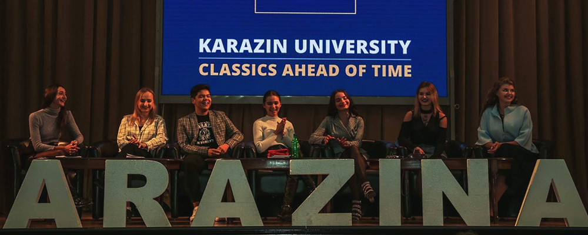

Чому обирають Каразінський?

За більш ніж два століття існування Каразінський університет здійснив значний внесок у розвиток українського суспільства, дав сильний імпульс перетворенню Харкова на потужний науковий і культурний центр, освітянську столицю України. Наразі університет по праву займає вищі щаблі всеукраїнських рейтингів серед класичних університетів і добре відомий далеко за межами України.
З Каразінським університетом пов’язані імена таких всесвітньо відомих учених, науковців та просвітників, як Петро Гулак-Артемовський, Микола Костомаров, Олександр Ляпунов, Олександр Потебня, Микола Бекетов, Дмитро Багалій, Микола Барабашов, Олесь Гончар, Олексій Погорєлов та багато інших.

Харківський університет — єдиний в Україні, де навчалися та працювали три лауреати Нобелівської премії: біолог Ілля Мечников, економіст Семен Кузнець, фізик Лев Ландау.
Імена вихованців університету увічнені в географічних назвах, назвах космічних об’єктів, рослин і мінералів, законів і формул. Понад 65 випускників університету стали дійсними членами і членами-кореспондентами Національної академії наук України.

Усі ці роки Каразінський університет змінювався та переймав найкращий світовий досвід. Він єдиний український заклад вищої освіти, що за результатами рейтингу QS World University увійшов до 500 кращих університетів світу. Сьогодні в університеті навчається понад 20 000 студентів та слухачів. І якщо ви збираєтеся долучитися до їхнього числа, то точно не пошкодуєте. Адже Каразінський університет — це класична освіта в поєднанні з інноваційними методами навчання. Це класика, що випереджає час. Студенти університету мають можливість брати участь у міжнародних програмах студентського обміну та поїхати на навчання в країни ЄС, програмах подвійних дипломів із провідними університетами ЄС у Франції, Польщі, Італії, Німеччині та Словаччині тощо. Університет співпрацює з провідними роботодавцями, зокрема студенти можуть стажуватися в українських і міжнародних компаніях, як-от: NIX Solutions, SoftServe та інші. Ми не просто пропонуємо якісну освіту, у стінах нашого університету ви зможете зануритися у демократичну атмосферу наукового та культурного запалу.

У Каразінському розвинене студентське самоврядування, яке не тільки захищає права студентів, але й впливає на розвиток університету, забезпечує студентам цікаве дозвілля. Окрім того, каразінці мають змогу долучитися до найрізноманітніших творчих та спортивних сфер діяльності, випробувати свої організаторські та лідерські якості.
Звісно ж, велике значення у виборі навчального закладу відіграють не тільки перспективи, але й умови навчання. Каразінський може запропонувати студентам проживання в сучасному студентському кампусі, відвідування університетських культурних та наукових центрів, музеїв, зокрема музею історії університету, музею природи, музею археології, музею астрономії, а також ботанічного саду, спортивних установ, потужної бібліотеки, сучасного коворкінгу тощо.

Обираючи Каразінський університет, ви обираєте майбутнє. Адже всі наші кроки спрямовані на те, аби йти на випередження усім викликам сьогодення.